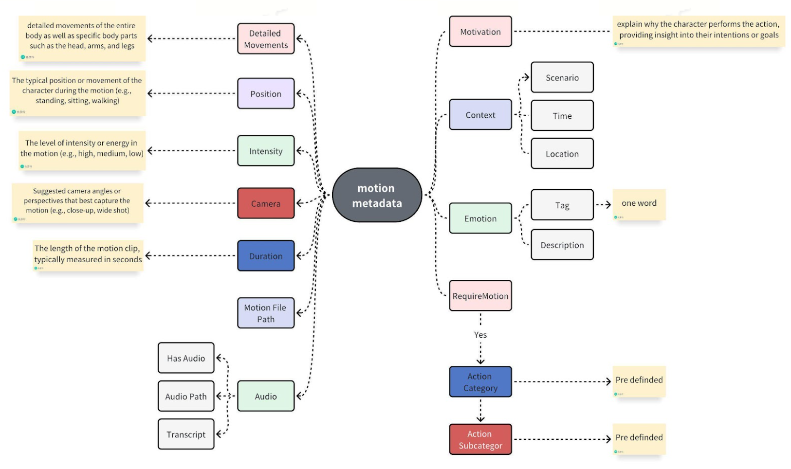
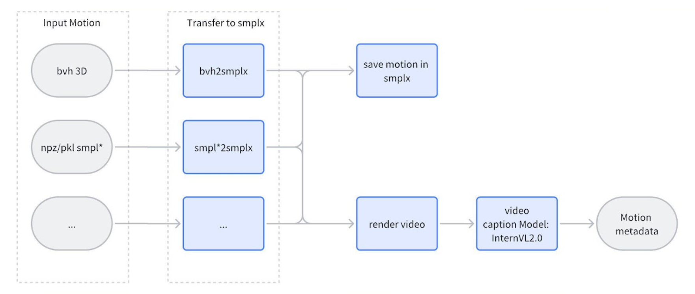
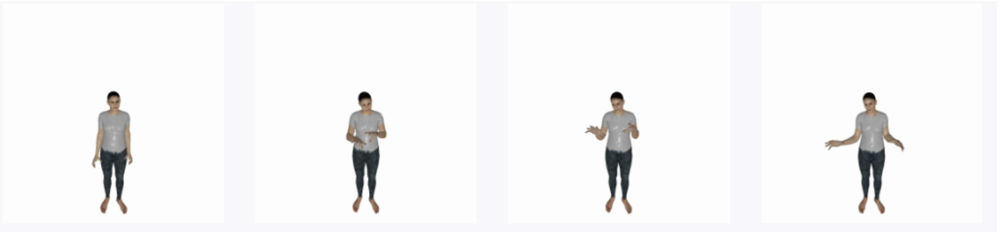
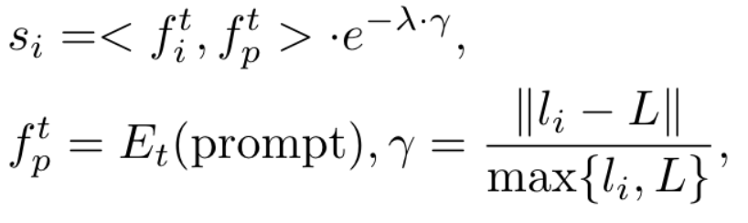
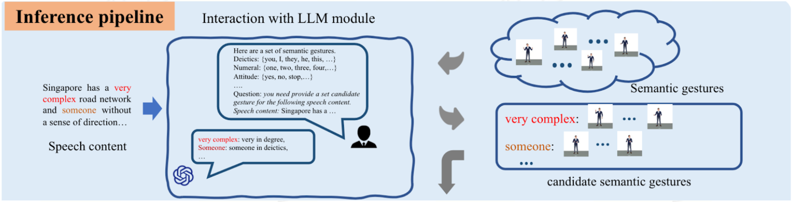
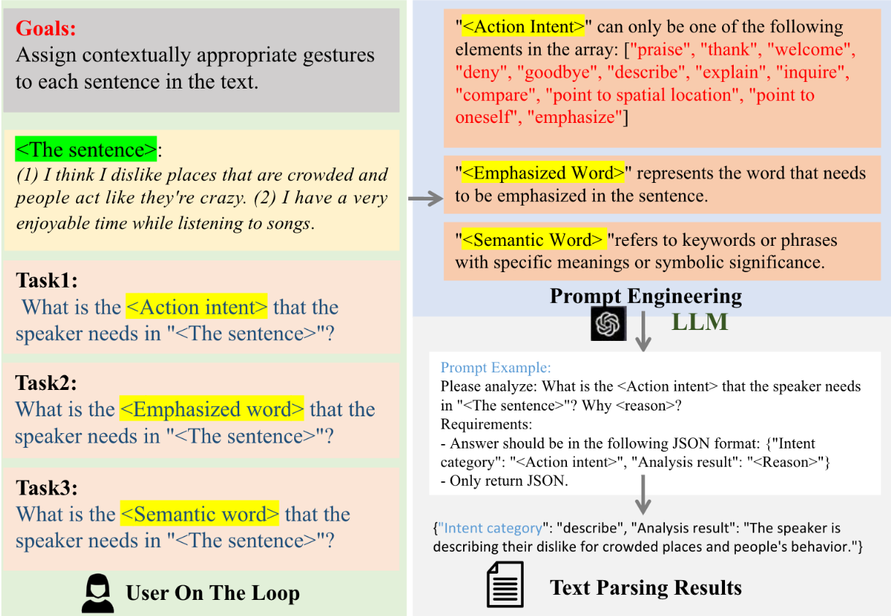
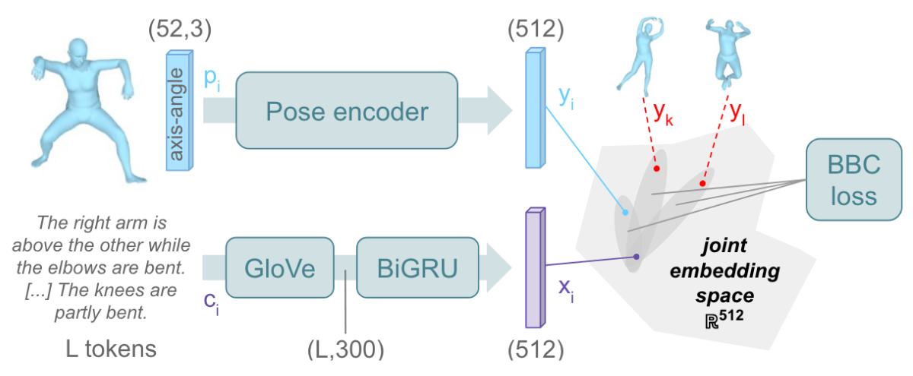
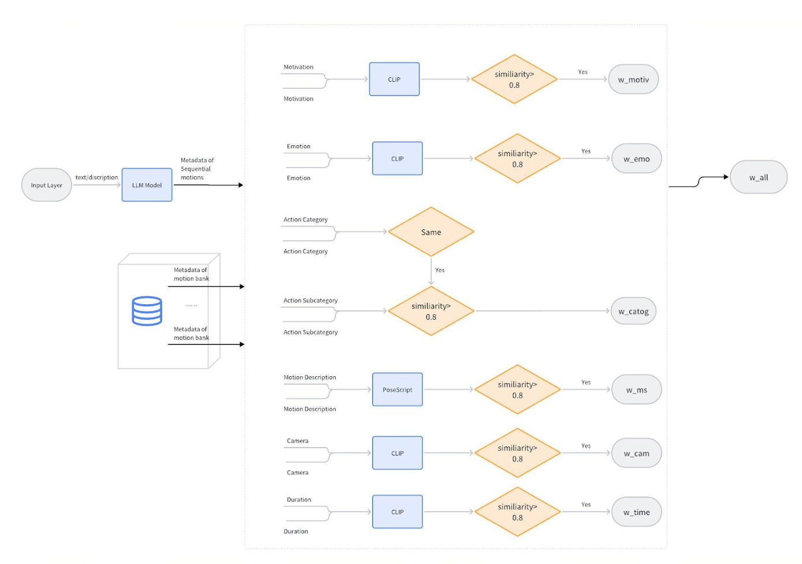

Render repo: GCP A100: 34.148.117.93 /data/ling/bvh_to_smplx
Seg_dataset: https://github.com/LuMen-ze/Semantic-Gesticulator-Official/tree/main/SeG_dataset
| Render | Metadata | Smplx Motion File | Audio |
|---|---|---|---|
{
"Motivation": "<Motivation>",
"Context": {
"Location": "<Location>",
"Time": "<Time>",
"Scenario": "<Scenario>"
},
"Emotion": {
"Tag": "<Emotion Word>",
"Description": "<Emotion Description>"
},
"RequireMotion": "<RequireMotion>",
"Action Category": "<Action Category>",
"Action Subcategory": "<Action Subcategory>",
"Detailed Movements": {
"Head": "<Head>",
"Arms": "<Arms>",
"Legs": "<Legs>"
},
"Position": "<Character Position>",
"Intensity": "<Intensity>",
"Camera": "<Suggested Camera Perspectives>",
"Duration": "<Duration>",
"Motion File Path": "<Motion File Path>",
"Audio": {
"Has Audio": "<HasAudio>",
"Audio Path": "<Audio Path>",
"Transcript": "<Transcript>"
}
}
|
[ARMS_RAISE_TOWORDS_SKY.npz] |

1. Motivation: This field could explain why the character performs the action, providing insight into their intentions or goals.
2. Context: The specific context or type of scene where the motion is used, including details such as location (e.g., office, park, restaurant), time of day (e.g., morning, evening), and the overall scenario (e.g., tense confrontation, casual conversation)
3. Emotion: The specific emotional state or mood that the motion communicates, such as happiness, frustration, apprehension, or excitement. This can include a range of feelings that provide insight into the character's psychological state or emotional response within the scene. The answer should be one word <Emotion Word>; and a detailed description <Emotion Description>
4. RequireMotion: What is the character's current status? Based on the motion categories provided, should we assign a specific motion to this character, or is the character simply in an idle state with minimal movement? Please determine if the character is actively engaged in a particular type of motion or if they are passively remaining stationary with slight or no visible actions. The answer is yes or no
5. What is the <Action Category> of the person? If RequireMotion is yes, then assign a <Action Category> to the motion. <Action Category> can only be one of the motion categories below.
6. What is the <Action Subcategory> of human motion? If RequireMotion is yes, then assign a <Action Subcategory> to the motion.<Action Subcategory> can only be one of the "subcategories" under the corresponding <ction Category> in the motion categories below
7. What are the detailed movements of the entire body as well as specific body parts such as the head, arms, and legs? Overall Body Movements: Describe the range of motions and dynamics involving the entire body, including posture shifts, weight distribution changes, and transitions between various states of movement. Head Movements: Specify actions such as no movement, tilting, nodding, shaking, turning, and any other nuanced head gestures that contribute to the character’s expression or intention. Arm Movements: Outline movements involving the arms, including no movement, lifting, swinging, extending, bending, and any complex gestures that add to the character's physical language. Leg Movements: Describe actions performed by the legs, such as no movement walking, running, kicking, bending, and any other leg movements that are significant to the character's physical expression or interaction with the environment
8. Character Position: The typical position or movement of the character during the motion (e.g., standing, sitting, walking)
9. Intensity: The level of intensity or energy in the motion (e.g., high, medium, low)
10. Camera Angle: Suggested camera angles or perspectives that best capture the motion (e.g., close-up, wide shot)
11. Duration: The length of the motion clip, typically measured in seconds

Initially, I align all 3D motions to the SMPL-X skeleton, then proceed to render a video from these aligned motions. This rendered video is subsequently fed into a large-scale model for automatic caption generation. In cases where poses do not include hand details, I utilize default hand parameters to ensure consistency.
I evaluated several models, including CogVLM2-Video-8B, InterVL2.0, ShareGPT4Video, and InternVL2.0 Pro. Among these, InternVL2.0 Pro delivered the most accurate and effective results.

{
"Motivation": "Explaining or demonstrating something.",
"Context": {
"Location": "Indoors/Neutral Space",
"Time": "Daytime",
"Scenario": "Casual explanation or demonstration."
},
"Emotion": "Neutral/Casual",
"RequireMotion": "Yes",
"Action Category": "Gestures",
"Action Subcategory": "Beat",
"Detailed Movements": {
"Head": "No significant movement.",
"Arms": "The character moves her hands outwards and slightly up, creating open and expansive gestures.",
"Legs": "Standing still with minimal leg movement."
},
"Position": "Standing",
"Intensity": "Low",
"Camera": "Medium shot to capture upper body and hand gestures.",
"Duration": "Approximately 5 seconds."
}
Existing motion retrieval methods include:




